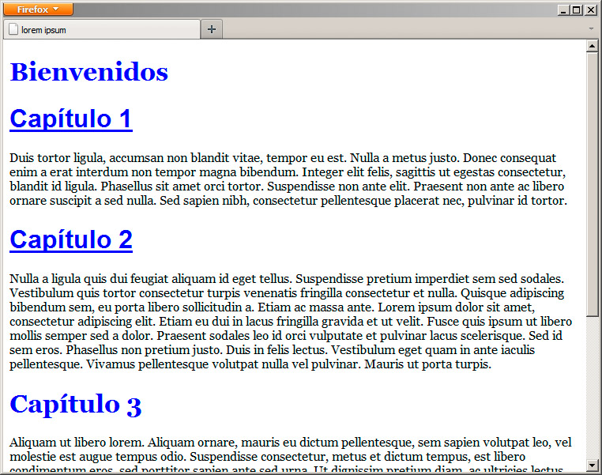
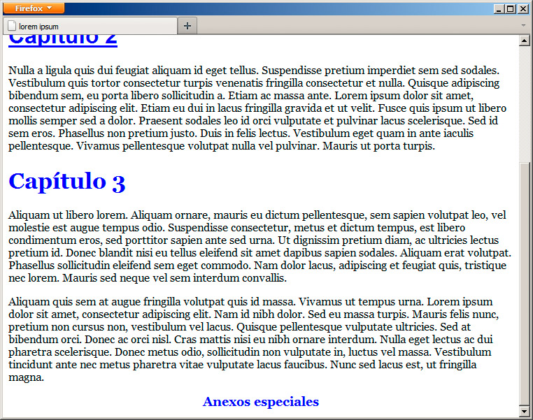
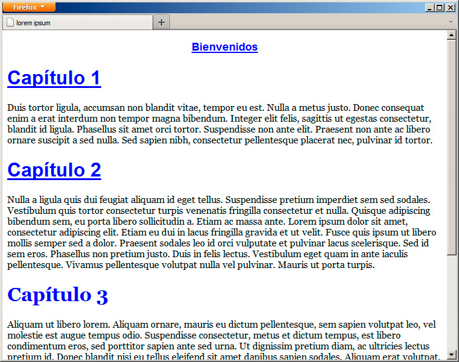
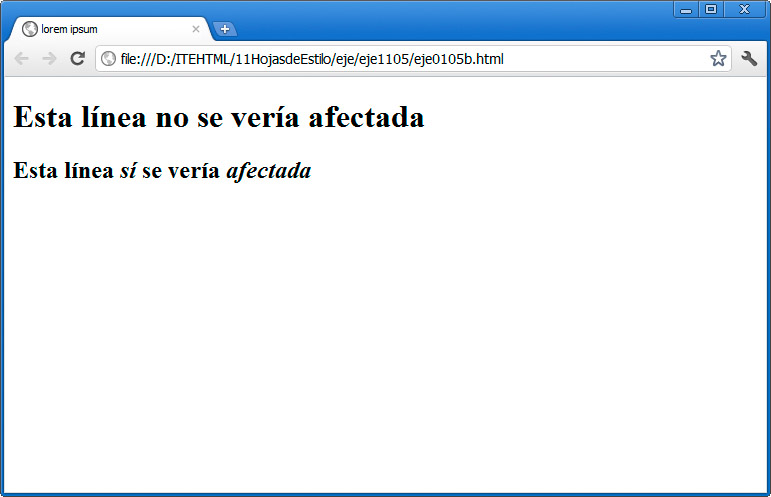
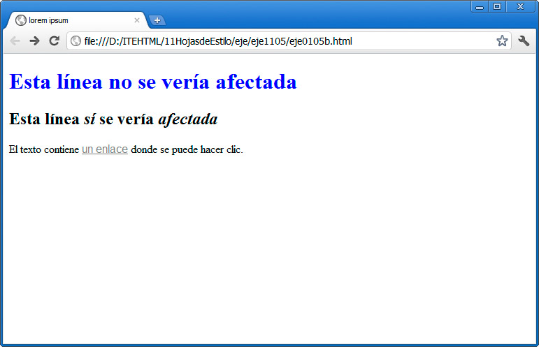
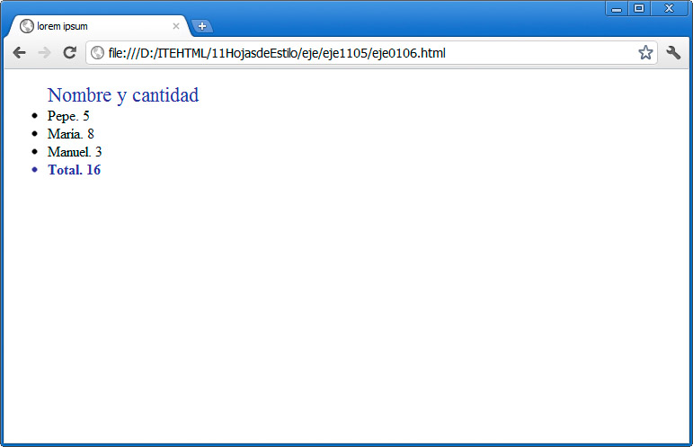

Pensemos ahora en una página en la que queremos cambiar la apariencia de algunos <h1>, pero no de todos. ¿Cómo lo conseguiríamos? Para ello tenemos un parámetro general de HTML denominado class ("clase" en español, en el sentido de "tipo"). Este parámetro nos sirve para crear un conjunto de etiquetas que forman parte del mismo grupo. El objetivo es que luego podremos referirnos a esa clase de forma conjunta.
En este ejemplo tenemos tres títulos diferentes:
<h1>Bienvenidos</h1>
<h1 class="capitulos">Capítulo 1</h1>
<h1 class="capitulos">Capítulo 2</h2>
Dos de ellos los hemos agrupado dentro de una clase llamada "capítulos". Gracias a ello podemos modificar sólo su apariencia, diferenciándolos del resto de los títulos del documento. Para referirnos a la clase, emplearíamos el signo de punto (.).
.capitulos { font-family: sans-serif; text-decoration: underline;}
Al probarlo en un navegador, obtendríamos el resultado de la figura.

Es decir, ahora tenemos dos tipos de títulos: mientras que todos ellos serán de color azul, sólo los que forman parte de la selecta clase "capítulos" tendrán un tipo de letra concreto y estarán subrayados. Por tanto, podemos aplicar normas para todos los títulos o sólo para los de los grupos que generemos.
Clases dependientes
Las reglas que definimos para una clase pueden ser aplicadas exclusivamente a una etiqueta. Así podríamos tener un par de reglas como éstas:
h1.capitulos { font-family: sans-serif; text-decoration: underline; font-size:14px}
p.capitulos { font-family: sans-serif; text-decoration: underline;}
De este modo podemos reutilizar el nombre de la clase y definir distintos valores, dependiendo de si se aplica a una cabecera o a un párrafo, en nuestro ejemplo.
Identificadores
Además de las clases, podemos diferenciar un único elemento entre todos los demás de una página mediante el parámetro id (abreviatura de "identificador"). Con id asignaremos un nombre único que luego podemos emplear en nuestra sección de estilos, precediéndolo en este caso del signo #.
Continuando con el ejemplo anterior, supongamos que tenemos un identificador como éste:
<h1 id="anexos">Anexos especiales</h1>
Podríamos modificar exclusivamente ese anexo mediante la siguiente regla:
#anexos { font-size: 18px; text-align: center; }
El resultado se muestra en la figura.

La clave del id es que estamos creando un grupo específico sólo con un elemento. Este modificador tiene otras muchas utilidades, ya que al designar un elemento de forma única dentro de la página web, podremos operar con él mediante JavaScript, aunque eso es otra cuestión.
El sentido de utilizar identificadores, al trabajar con estilos, es mayor cuando pensamos en las hojas externas. Podemos tener un elemento con un identificador que se repite a lo largo de varias páginas. Si nuestros estilos están guardados en un archivo externo, podremos modificar todos esos identificadores con facilidad.
Pregunta Verdadero-Falso
Verdadero Falso
Verdadero Falso
Actividad 2
Utilizando un editor de páginas web y el documento base anterior, definiremos un par de clases diferentes para distinguir los títulos de capítulos de los títulos generales o distintos tipos de párrafos, lo que mejor se ajuste a nuestro texto. Para ello estableceremos el nombre de cada clase en el cuadro Clase de la barra del editor y en el panel Propiedades de estilo seleccionaremos la opción todos los elementos de la clase en el cuadro Aplicar estilos a:
Crearemos también un identificador en algún elemento. En este caso, indicaremos un nombre en el cuadro Identificador de la barra del editor, situado justo antes del cuadro Clase. Para aplicar estilos a un identificador, seleccionaremos la opción este elemento mediante su ID en el cuadro Aplicar estilos a: del panel Propiedades de estilo.
Aplicaremos estilos distintos a las clases y el identificador, modificando algunos aspectos generales del texto, como su tamaño, color o alineación.
Identificadores dependientes
Como sucede con las clases, un identificador puede estar definido de forma general o específicamente para una etiqueta concreta. Es distinto esto:
#anexos { font-size: 18px; text-align: center; }
que esto:
div#anexos { font-size: 18px; text-align: center; }
El segundo sólo se aplicaría a un elemento que se llamase así:
<div id="anexos">
pero no a uno denominado
<h1 id="anexos">
Combinación de class e id
Se pueden combinar los parámetros class e id en un mismo elemento, con lo que conseguiremos que se le apliquen tanto las reglas definidas para la clase como para el identificador.
Este ejemplo:
<h1 class="capitulos" id="anexos">Bienvenidos</h1>
da como resultado una mezcla de todas las reglas que hemos aplicado hasta ahora, tanto las del elemento <h1>, como las de la clase y las del identificador. Observa la figura:

Más selectores
Hay otros métodos para definir reglas que se aplicarán a diferentes grupos de etiquetas.
Selector universal
El signo * se emplea para definir a todo el conjunto de etiquetas de una página web. Nos sirve para indicar "esto se aplica a cualquier etiqueta". Por ejemplo:
* {font-family:san-serif; }
Hace que cualquier etiqueta de la página tome ese tipo de letra.
Agrupación de selectores
También podemos emplear la coma para agrupar varias etiquetas, clases e identificadores. Un par de ejemplos:
p, h1, h2 {font-family: times, word-spacing: 2px;}
img, #portada, hr, .fotografia {margin: 6px;}
Sucesores y antecesores
Todavía obtenemos mayor control, gracias a las opciones que nos ofrece CSS para aplicar estilos, si un elemento desciende de otro o es el padre de uno. No entraremos en demasiados detalles, pero observemos la siguiente regla:
h2 strong {font-style: italic; }
Esa línea haría que se mostrase en cursiva el contenido etiquetado dentro de <strong>, pero si y sólo si esta etiqueta se encuentra dentro de una cabecera <h2>. No es necesario que lo sea directamente; puede haber otras etiquetas conteniendo la de <strong>.
Por ejemplo:
<h1>Esta línea no se vería <strong>afectada</strong></h1>
<h2>Esta línea <strong>sí</strong> se vería <strong>afectada</strong></h2>
El ejemplo anterior se mostraría como en la figura:

El espacio, por tanto, indica que la aplicación se hará dependiendo de si un elemento está dentro de otro.
Además hay otros operadores que definen el tipo de relación, como el *, el signo de > (que indica que un elemento desciende directamente de otro), el de + o el signo ~.
Pregunta Verdadero-Falso
Verdadero Falso
Verdadero Falso
Nota
El uso de estas opciones en estos primeros compases será muy limitado, por lo que no profundizaremos más en ello, por ahora.
Actividad 3
En el documento anterior tomaremos una etiqueta que tenga nombre de clase y en su interior definiremos una parte como <strong>. Haremos lo mismo con otra etiqueta que no tenga nombre de clase. Por último, definiremos un selector para que se aplique formato sólo a la etiqueta que tiene nombre de clase y no a todos los <strong> del documento. Es decir, recurriremos al selector de sucesores para conseguir el efecto.
Estos cambios no los realizaremos con BlueGriffon, sino que definiremos los selectores directamente en el código fuente de la página, en la cabecera del documento.
Pseudoclases
Contamos con un último tipo de selectores denominado pseudoclases que permiten definir propiedades para algunos elementos html que cuentan con diferentes estados. El más conocido es el caso de la etiqueta <a>, empleada para definir enlaces. Esta etiqueta puede tener varios estados. Estos son los principales:
- a:link: el estado normal de un enlace no visitado.
- a:visited: el estado de un enlace, una vez que ha sido visitado.
- a:active: cuando se está pulsando sobre el elemento.
- a:hover: cuando el ratón está sobre el elemento.
- a:focus: cuando el elemento tiene el foco del navegador. Es el que está preseleccionado.
Pues bien, si definimos algunos de esos estados, conseguiremos, por ejemplo, que un enlace cambie su apariencia al pasar el ratón sobre él (a:hover) o que cambie de color cuando ha sido visitado (a:visited). Podríamos hacerlo así:
a:link {font-family: sans-serif; }
a:hover {color:red; }
a:visited {color:gray; }
La figura muestra el enlace tras ser visitado:

Aún hay muchas más pseudoclases, centradas en aspectos posicionales, dependientes de si un elemento es el primero de su tipo (:first-of-type, :last-of-type), si es el único descendiente (:only-child), si está vacío (:empty), etc. Incluso tenemos una pseudoclase para no aplicar estilo a un elemento concreto (:not), pero de nuevo su uso es poco frecuente en esta etapa de aprendizaje de CSS.
Veamos un ejemplo de uso con la lista siguiente:
<ul>
<li>Nombre y cantidad</li>
<li>Pepe. 5 </li>
<li>María. 8 </li>
<li>Manuel. 3</li>
<li>Total. 16</li>
</ul>
Le aplicaremos los estilos siguientes:
li:first-child {font-size:22px; color:#333399; list-style-type: none }
li:last-of-type {font-size:16px; color:#333399 ; font-weight:bolder; }
En este caso no había diferencia entre emplear child o of-type. El resultado que obtenemos es el de la figura:

Actividad 4
Siguiendo con nuestro ejemplo, crearemos un enlace a la página desde la que tomamos el texto original y definiremos estilos para los diferentes estados posibles del enlace, mediante los pseudoselectores.
Definiremos en la cabecera de la página al menos los estilos para a:link, a:hover y a:visited.